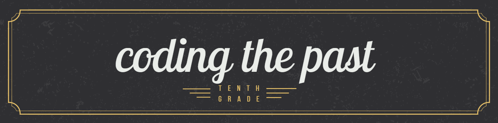
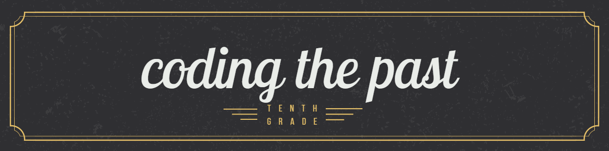
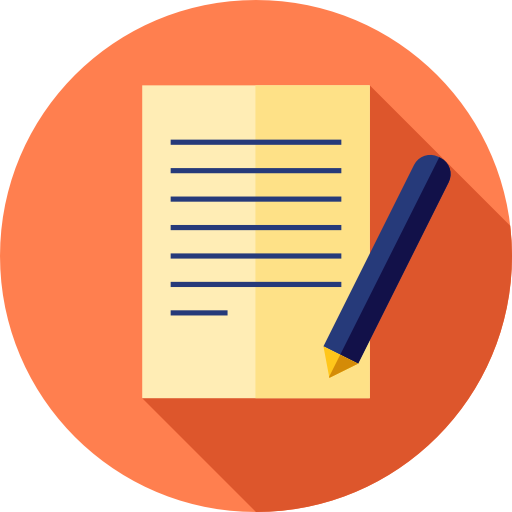
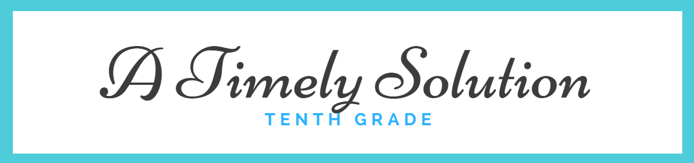
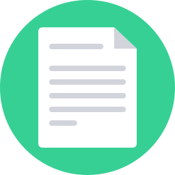

This is the Humanities portion of my Coding the Past project. In Humanities, we were assigned to create a layered portrait of our interviewee. This was followed by a reflection of that same portrait. In my refelection, I explain style attributes of the image. Afterward, we chose a main idea from our interview and crafted an essay about it. The person I chose to interview was my father. My reason for choosing him is due to the fact that he has a very interesting story to tell. During this project, I grew closer to my father and discovered things I never would've known.
This is the subject portrait that I crafted based off of my interview.
Linked to the photo below is the reflection of my subject's portrait.
Linked to the photo below is the Essay I drafted based off of my subject's interview
 This is the Humanities portion of my Timely Solution project. In Humanities, we were assigned to create two art pieces based off of precreated poems. The first art piece was based off of the Industrial Revolution. Following our World History content. My first poem was about child labor during the Industrial revolution. I crafted my collage out of canvas, paint, and eyes cut out of magazine papers. My second poem was about social media and race. I crafted this collage out of paint and canvas. Reasons for my design choices can be found in the links and/or descriptions below.

This is the Primary source photo that I created my poem around.
Click the photo above to read my poem.
This is the collage that I crafted based around my poem.
Linked to the photo below is my artist statement for my first collage. It covers design choices in my poem and art pieces.

This is my second poem.
This is my social media art piece.

Linked to the photo above is artist statement for my second collage. It covers design choices in my poem and art pieces.